One Current es una línea de tiempo de tu vida, calmada y privada. Lo que sea que jale tu atención — un mensaje sin responder, una preocupación, una decisión que sigues aplazando — se vuelve un hilo visible que se desprende de tu línea principal. Lo ves, decides qué necesita, la línea cambia, y vuelves a tu vida.
Gratis para empezar. Tus hilos se quedan en tu dispositivo. Sin publicidad.
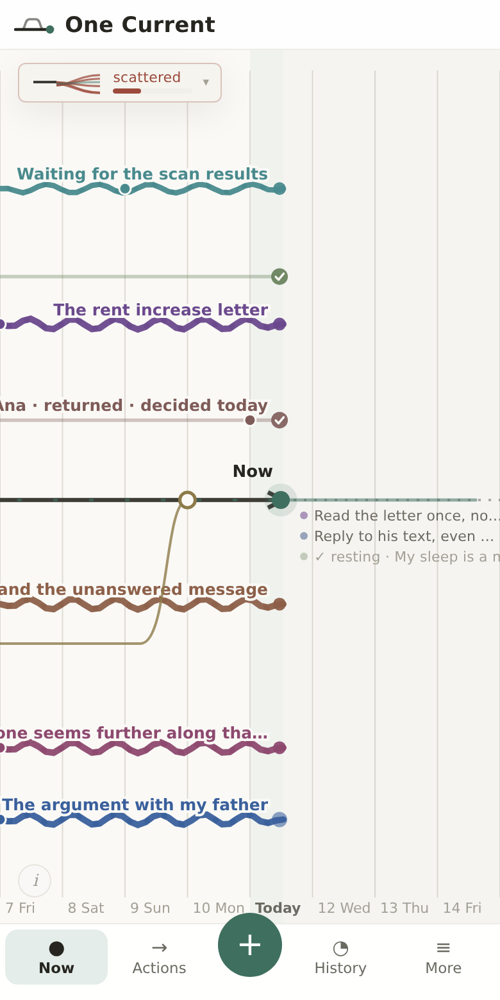
Qué es
La mayor parte de lo que te agota no es el trabajo que tienes enfrente — es todo lo que corre en el fondo. La discusión que sigues repitiendo en la cabeza. La carta que no has respondido. La comparación que se enciende cada vez que abres el celular. One Current le da a cada una de esas cosas una línea propia, para que en vez de un peso difuso veas exactamente qué está abierto, con qué fuerza jala y cuánto tiempo lleva corriendo.
Tu vida, avanzando por Ahora. Todo lo que está en ella es donde realmente estás.
Cualquier cosa que se desprendió y sigue jalando — una persona, un miedo, una tarea, una etapa de la vida. Cada uno tiene su volumen, y la línea lo muestra: los hilos que suenan más fuerte corren más gruesos y más inquietos.
Los hilos sin decidir suenan más fuerte solos, día tras día — igual que las preocupaciones reales. Cualquier decisión honesta los calma de nuevo.
Los hilos no se borran ni se reprimen. Cuando uno ya te dio lo que podía, se curva de vuelta hacia tu línea principal y viaja contigo.
Del tranquilo Riverbed a estanques de koi, cachorros pomerania, globos, gatos, peces abisales, fantasmas y dragones — cada hilo abierto se vuelve una criaturita que se calma cuando decides.
Toda la app habla inglés o español — cada palabra que dice cambia, mientras tus propias palabras quedan exactamente como las escribiste.
Cómo funciona
One Current no es un lugar para pasar el rato. Es un lugar para tomar una decisión pequeña y honesta, e irte.
Toca + y escríbelo con tus propias palabras. Un hilo nuevo aparece en la línea de tiempo de inmediato — más o menos cuando empezó, con color, y con la fuerza con la que jala.
Eso solo ya cambia algo: lo que jala ahora tiene forma y lugar, en vez de dar vueltas en tu cabeza.
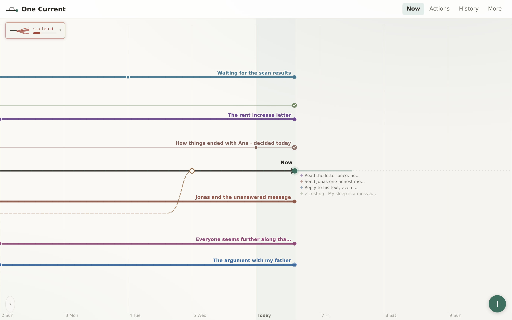
Cada hilo abierto sigue visible hasta que decides qué necesita.
Toca un hilo y se abre un panel rápido: su nombre y un solo control — ¿qué tan fuerte suena este hilo ahora mismo? Ajústalo y sigue; ese toque no te compromete a hacer nada.
O sáltate el panel del todo: mantén el dedo sobre el hilo y deslízalo hacia arriba o hacia abajo, y su volumen se ajusta ahí mismo, sobre la línea de tiempo.
El volumen también es honesto con el tiempo. Un hilo sin decidir suena más fuerte día tras día, y la línea lo muestra — más gruesa, más inquieta — hasta que le das una decisión.
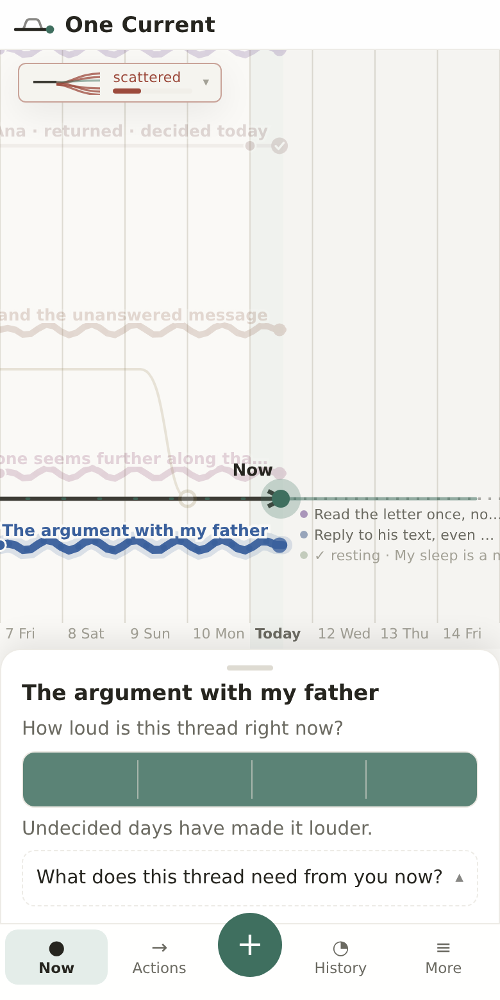
Un solo control primero. Todo lo demás queda guardado.
Cuando quieras hacer más, abre el menú completo y responde una sola pregunta: ¿qué necesita este hilo de ti ahora?
Actuar — da un paso pequeño. Integrar — trae de vuelta lo que todavía importa. Anotar — agrega lo que acaba de pasar. O di con honestidad: ahora no se puede hacer nada — y eso también cuenta como decisión.
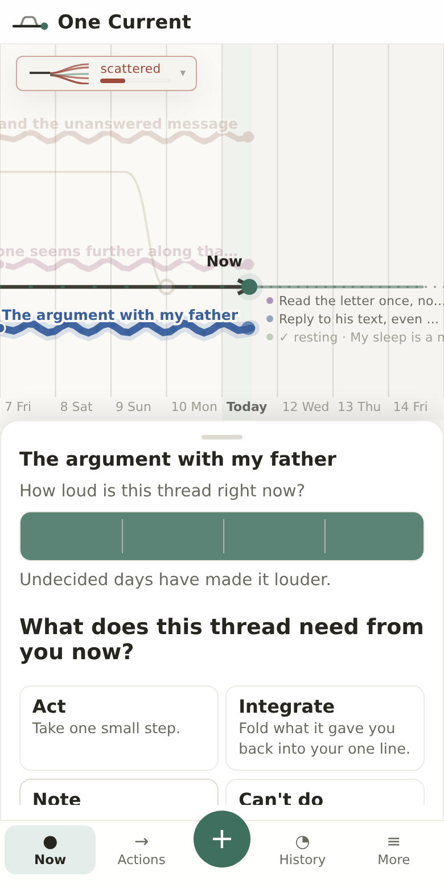
Cuatro respuestas honestas. Sin formularios, sin puntajes.
Tus decisiones aparecen en la propia línea de tiempo. Los pasos que elegiste aparecen adelante de Ahora. Los hilos que decidiste hoy quedan marcados. Un hilo que integras se curva de vuelta hacia la línea principal y queda como parte de tu historia.
La vista de Acciones lo reúne todo en un vistazo: qué hilos todavía necesitan una decisión hoy, y cuáles ya están resueltos.
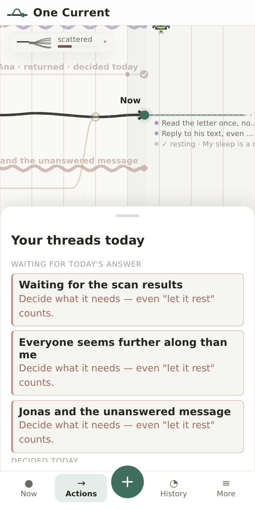
Sin decidir arriba, decidido abajo — nada más que rastrear.
Cada hilo tiene una puerta más silenciosa: comprender este hilo. Ahí puedes nombrar qué de él todavía te pertenece ahora — confianza, descanso, conexión, cierre — comparar dónde empezó con dónde estás, y notar qué se siente menos disponible mientras sigue abierto.
Todo eso es opcional. Nada aquí es obligatorio.
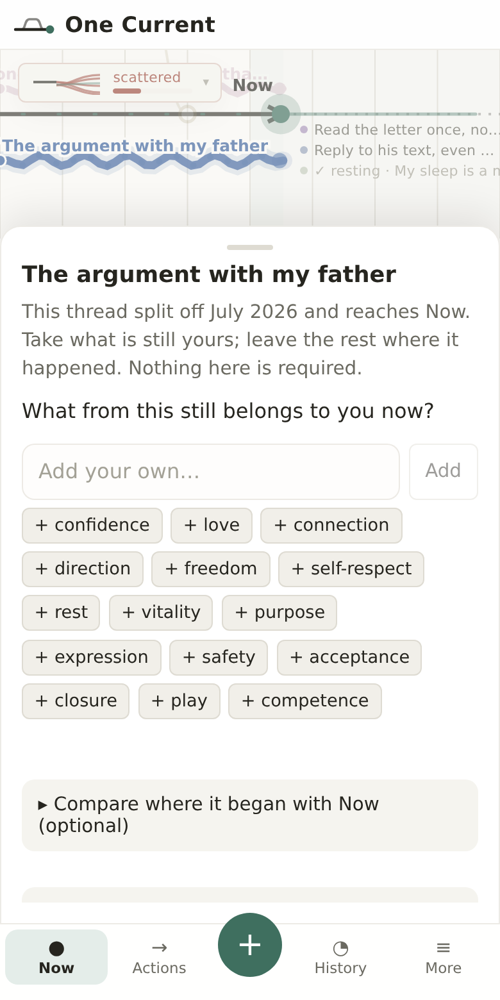
Toma lo que todavía es tuyo; deja el resto donde pasó.
Una pequeña ficha en la esquina muestra tu integridad — cuántos hilos te están jalando, y con cuánta fuerza. Cuando estás disperso te lo dice sin rodeos, y señala la única decisión que más te reuniría en este momento.
Ese mismo volumen fluye hacia tu historia: día a día puedes ver qué sentimientos estaban reteniendo tus hilos abiertos, y cómo decidir sobre ellos te devolvió la energía.
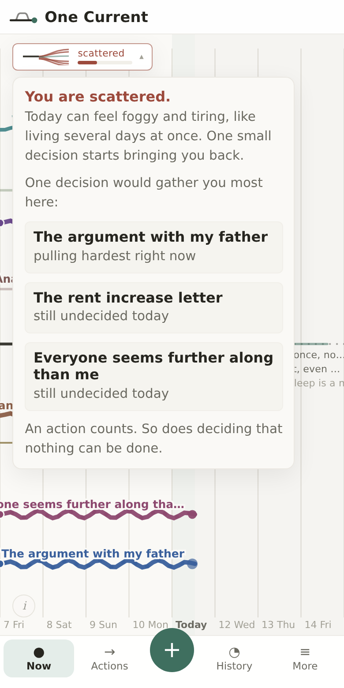
No es un puntaje para optimizar — es un reporte del clima, y un paso siguiente.
Tu compañero
Un pequeño personaje animado vive en tu línea de tiempo. Patrulla tus hilos, detecta lo que necesita atención y reacciona cada vez que tomas una decisión — como tener un amigo paciente y animador pendiente de todo contigo.
Pip zigzaguea solo entre tus líneas abiertas — inspeccionando cada una, quedándose más tiempo en los hilos que suenan más fuerte. Siempre está haciendo algo. Nada se le escapa.
Cuando elige su siguiente destino, ese hilo se ilumina primero, para que sepas exactamente hacia dónde va antes de que se mueva.
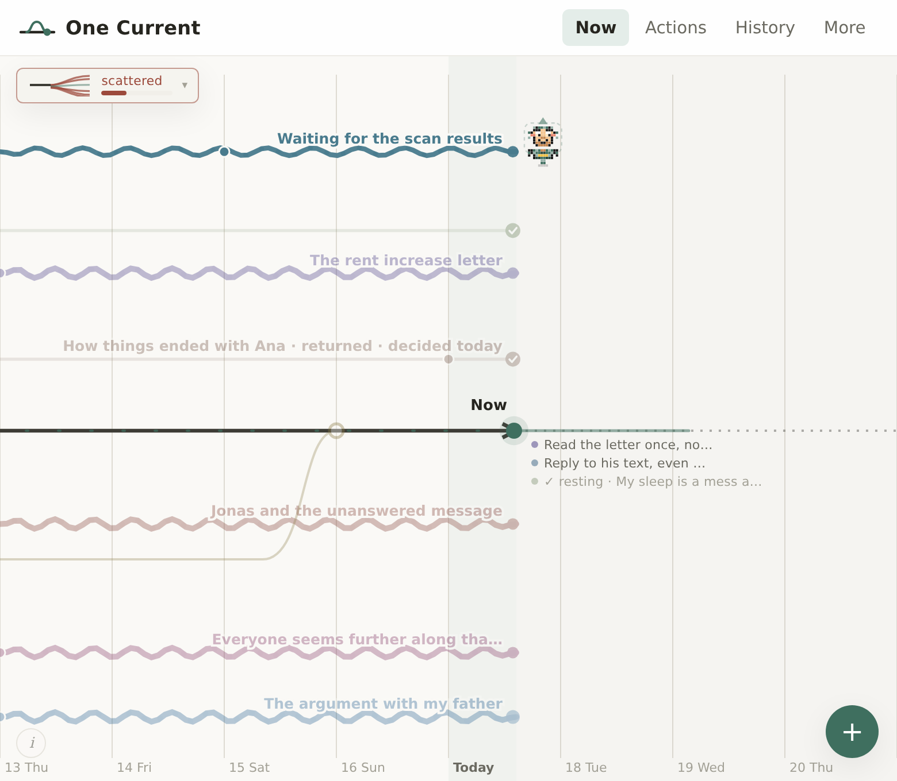
Pip ilumina el hilo que está por visitar — y luego corre.
Cuando Pip aterriza en un hilo, abre una pequeña burbuja con una lectura de una línea de la situación: «¡Este hilo está TENAZ, parce! ¿Lo resolvemos?» o «¡Jefe, este ya está listo para cerrar!»
Tócalo y se abre el panel de acciones del hilo. Un movimiento y listo.
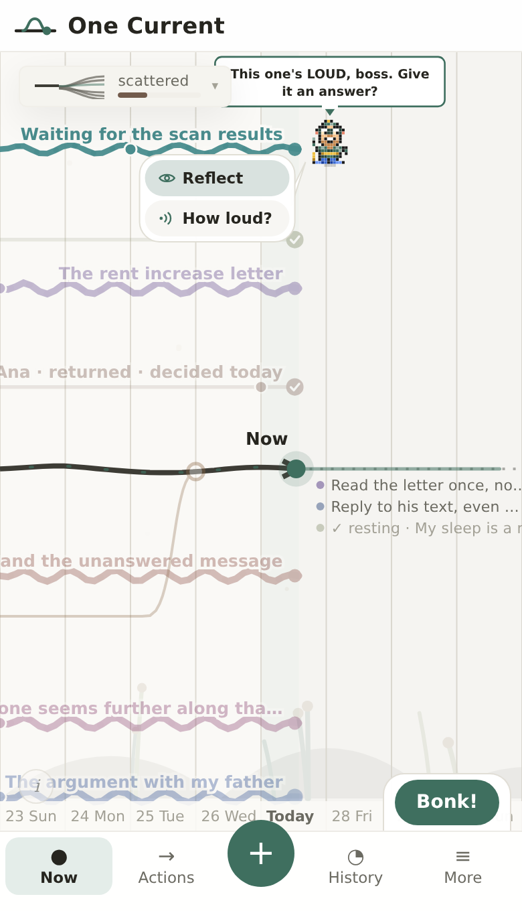
Lecturas cortas, nunca exigencias. Tócalo para actuar sobre el hilo.
Integra un hilo — «¡Listo, parce! ¡Una menos!» Agrega una nota — «Anotado. Testigo de ello.» Toma una acción — «¡PLAN LISTO! ¡Vamos!»
Las victorias pequeñas merecen reconocimiento. Pip lo da todas y cada una de las veces, con la voz de un amigo que de verdad va contigo.
Elige entre tres personajes en Ajustes → Compañero. El Chronicler llega con gafas y una pluma dorada. El Wisp flota entre los hilos dejando una estela de luz etérea. El Wanderer entra a zancadas con sombrero ancho y bastón.
Los tres visten el color de acento de tu tema actual, se mueven con la misma patrulla fluida en zigzag y cargan la misma energía inconfundible de parcero.
Tres compañeros. Cambia cuando quieras en Ajustes → Compañero.
La app hermana
One Current guarda lo que te preocupa. Wellspring guarda lo que valoras — la paciencia, la honestidad, el oficio, estar presente — como manantiales que alimentan la misma línea de Ahora. La misma cuenta, la misma calma, y las dos apps se hablan entre sí.
Cada preocupación que resuelves en One Current — un hilo integrado, una decisión que alivió, una acción hecha — llega a Wellspring debajo de la línea y sube hacia ella. Toca una y dedícala: «resolver la negociación del arriendo regó la Paciencia». Se vuelve un momento de evidencia en ese manantial.
Nada que exportar, nada que copiar. Inicia sesión con la misma cuenta y las apps se sincronizan a través de tu propia copia cifrada — las preocupaciones resueltas fluyen solas.
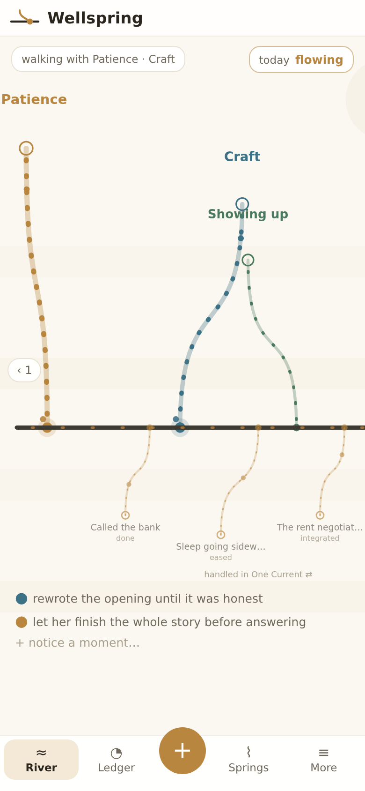
Las preocupaciones resueltas en One Current suben a la línea desde abajo — y riegan tus valores.
Toca un manantial y el panel se abre con una sola pregunta y el mismo control que One Current usa para el volumen — una barra que arrastras con el pulgar, desde un susurro hasta lo que guía. El río responde mientras te mueves: el manantial se engrosa en vivo detrás del panel.
Los manantiales que alimentas corren gruesos y brillantes. Deja uno una semana y apenas susurra — nada te regaña, nada se pone rojo. Aquí los valores son evidencia, no rachas.
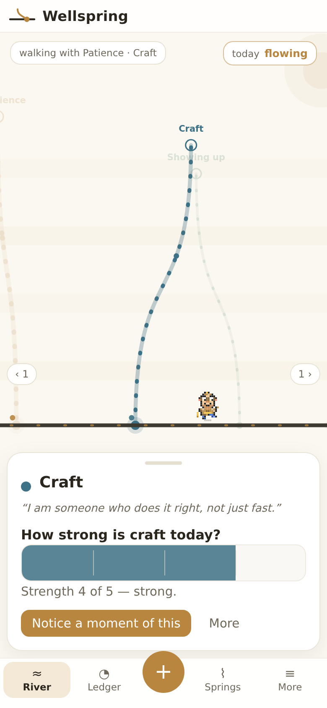
El panel nunca tapa el agua — la línea corre justo encima, Pip incluido.
Seis aspectos, cada uno un mundo detrás del agua: en Seaweed cada manantial es un tallo de alga con rayos de luz y burbujas que suben — alimenta uno y lo visita un pececito. Meadow hace crecer flores y una abeja lenta, Lanternfall cuelga faroles de papel, Aurora hace titilar estrellas.
Y tu psicólogo también puede ver este río: comparte manantiales, fuerzas y momentos con el mismo código de un solo uso que usa One Current, renderizado bellamente en la misma app acompañante gratuita.
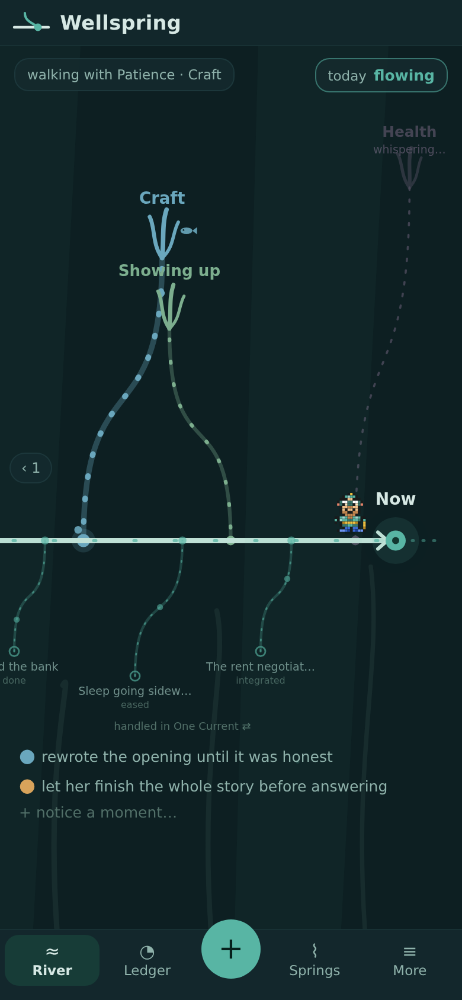
Seaweed — uno de cuatro aspectos vivos de Pro, cada uno con su propio mundo.
Por qué funciona
No hay nada roto en ti. Una mente que sostiene seis preocupaciones abiertas está haciendo exactamente lo que hacen las mentes: repasar todo lo que quedó sin cerrar, una y otra vez, para no perderlo. One Current le da a todo eso un lugar donde quedarse. Esto es lo que pasa cuando lo tiene.
Una preocupación que cargas no tiene bordes. Dibujada como una línea con un principio y un final, se vuelve una cosa entre pocas: finita, y visiblemente más pequeña que tú.
Ese es todo el primer movimiento. No tienes que resolverla. Solo tienes que dejarla en algún lugar donde puedas verla.
La mente repasa los pendientes abiertos sin que nadie la invite, pero los experimentos muestran que las intrusiones se calman en cuanto el pendiente queda escrito de forma concreta, aunque todavía no se haya hecho nada al respecto. Ver los estudios
One Current solo te pide unas pocas palabras tuyas: ni una puntuación, ni una categoría. Ese nombrar sencillo hace mucho más que dejar constancia.
Lo vas a sentir como la diferencia entre un zumbido que no ubicas y una frase que podrías decir en voz alta.
En estudios de imagen cerebral, poner un sentimiento en palabras calma la amígdala —la alarma del cerebro— mientras enciende la región que nombra. Nombrar no es poca cosa: es regulación. Ver los estudios
Decidir que hoy no se puede hacer nada es una respuesta de verdad, y la app la registra como tal. El hilo se calla, y eso lo hiciste a propósito.
Sin contadores, sin números que suben, sin nada que te castigue por una semana difícil. Lo único que crece aquí es la parte de ti que no está en otra parte.
La capa de juego está construida con lo que respaldan los ensayos: los elementos de juego ayudan a la gente a seguir apareciendo, no a sentirse mejor por sí solos. Y dejamos fuera lo que esa misma literatura advierte. Ver los estudios
Cuando un hilo termina por ahora, se curva y vuelve a tu línea, y tú eliges qué te entrega. La paciencia que encontraste. El respeto por ti mismo. Va hacia la línea, no a la basura.
Y si algún día vuelve, eso tampoco es un fracaso. Te encuentras con su versión más nueva y más pequeña, de pie sobre todo lo que te dejó la anterior.
Un estudio sobre cómo las apps dibujan el progreso roto encontró que el dibujo mismo cambia la conducta: las interrupciones mostradas como reparables hacen que la gente siga, y las mostradas como definitivas hacen que abandone. Aquí nada se dibuja nunca como definitivo. Ver los estudios
La idea de fondo
Escucha cómo habla ya todo el mundo de su vida interior:
Todas ésas son palabras de mano. De todas las metáforas disponibles, la que agarró nuestra especie entera es: los pensamientos son objetos, y las manos los manejan.
Así que dejamos de tratarlo como una figura retórica y lo construimos. Un hilo que puedes ver, tocar, bajarle el volumen, dejar a un lado y volver a tomar. A la idea de trabajo la llamamos la Hipótesis de la Agarrabilidad: un sentimiento se vuelve más fácil de sostener más o menos en proporción a lo agarrable que logres hacer su forma.
Dicho claro: One Current está construido sobre esta investigación, no probado por ella. No ha pasado por un ensayo clínico, y nunca vamos a pretender que la app trate nada. La página completa muestra todos los estudios, incluidos los que le complican la vida a nuestro argumento.
Leer la investigación completaNunca un plan. Manda un mensaje, lee la carta una vez, di una frase verdadera. Lo bastante pequeño para que hoy sí lo hagas.
Cada pantalla tiene un propósito y un puñado de palabras. Decides, la línea cambia, y recuperas tu noche.
Cuando un hilo es de ésos, One Current lo dice sin rodeos, y hace que buscar a otra persona sea una de las respuestas normales, no la última.
Pro Mejora de pago
La app gratuita te deja tener hasta diez hilos abiertos y usar cinco temas tranquilos. Pro quita esos límites y agrega copia de seguridad en la nube, los siete temas vivos de criaturas, y la posibilidad de compartir tu línea de tiempo con tu psicólogo usando un solo código de ocho caracteres — sin archivos, sin pasos complicados. Y aplica para toda la familia: el mismo Pro desbloquea los aspectos vivos de Wellspring y su función de compartir con tu psicólogo también.
Antes de una sesión, escoges qué hilos incluir — uno por uno. Luego tocas Subir y obtener un código. Aparece un código de ocho caracteres: válido una sola vez, por catorce días, y nada se envía hasta que tú lo entregues.
Tu psicólogo ingresa el código en la app acompañante y tu línea de tiempo aparece — solo lectura, sin necesidad de cuenta de su lado para la versión local, o cuenta gratis para canjear desde la nube. Recorrer un hilo juntos le da forma a la sesión, más allá de un «¿cómo te fue esta semana?» en blanco.
La app acompañante muestra cada día del periodo compartido: qué hilos se movieron, cuáles sonaron más fuerte, sobre cuáles decidiste. La conversación empieza con el panorama ya frente a los dos.
No es un concepto. Es una app web que funciona y que tu psicólogo puede abrir en one-current-psycho ahora mismo, gratis.
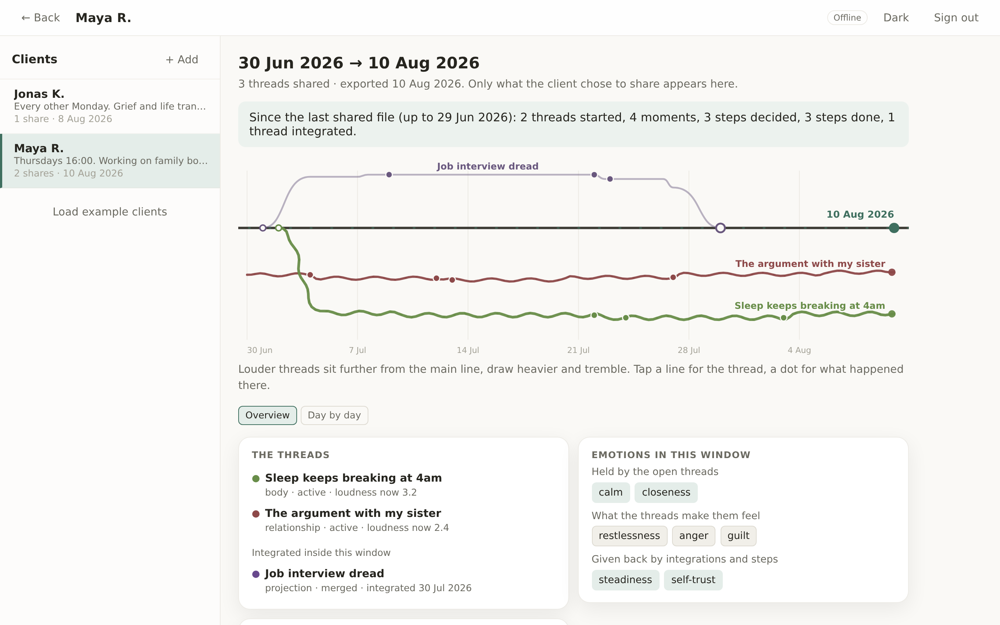
La misma línea de tiempo con ramas que tu paciente conoce, ajustada a la sesión. Toca cualquier marcador para ver qué pasó ese día y el recorrido completo del hilo.
Cada día registrado, uno debajo del otro — cambios de volumen, decisiones tomadas, rachas tranquilas plegadas en una sola línea. Nada que interpretar; solo el registro.
Los archivos compartidos de cada cliente se guardan bajo su nombre. Los nuevos envíos del mismo paciente se apilan en orden. Todo se queda en el dispositivo del profesional.
Los códigos para compartir son de un solo uso y caducan en catorce días. Los datos de tu línea de tiempo solo se mueven cuando tú haces el acto de compartir — el código queda inservible después de un canje. La copia en la nube es opcional y se guarda en tu cuenta; tu psicólogo se queda únicamente con lo que elegiste compartir. One Current no es una herramienta de diagnóstico, ni una historia clínica, ni un canal para crisis.
One Current Pro
€6 / mes
Facturado cada mes. Cancela cuando quieras.
Pasarme a ProUn solo plan cubre las dos apps — One Current y Wellspring. Tu psicólogo nunca paga — la app acompañante siempre es gratis para clínicos.
Para psicólogos y terapeutas
Tú nunca pagas. Tu paciente comparte su línea de tiempo con un código de ocho caracteres; lo ingresas y sus hilos aparecen en tu app. Dos vistas mantienen la conversación aterrizada: la línea de tiempo compartida con marcadores que puedes tocar, y un registro día por día de cada momento que anotó. Lo compartido desde Wellspring llega igual — sus valores, las lecturas diarias de fortaleza y los momentos que las respaldan, mostrados junto a los hilos, con una marca ⇄ donde una preocupación resuelta alimentó un valor.
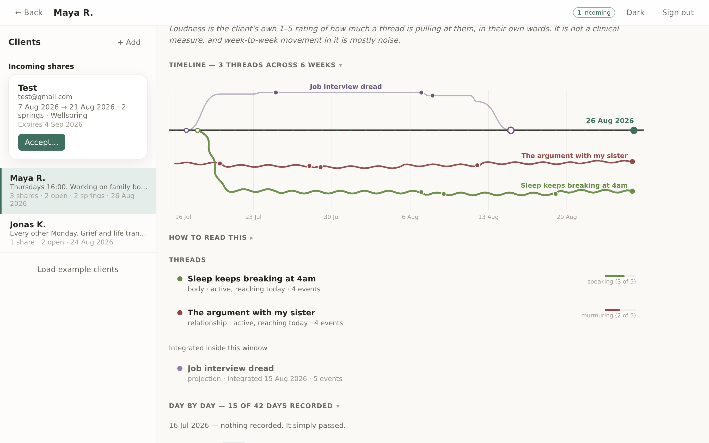
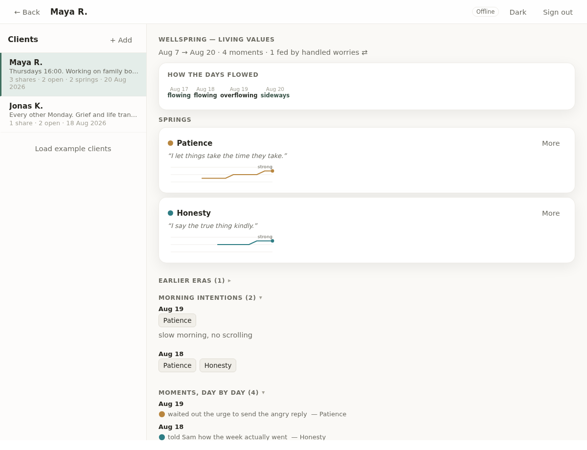
Abre la app web en cualquier navegador. Tu paciente te envía sus hilos como archivo o como código — lo importas y la sesión empieza. Nada vive en un servidor que tú no controles.
Crea una cuenta gratis, agrega a tu paciente como cliente e ingresa su código de ocho caracteres. Lo compartido llega al instante — válido una vez, caducado a los catorce días.
La línea de tiempo de cada cliente se guarda bajo su nombre en tu dispositivo. Los nuevos envíos del mismo paciente se apilan en orden. Puedes borrar los datos de cualquier cliente cuando quieras.
Temas
Cinco apariencias tranquilas — Riverbed, Midnight, Sunprint, Duskwood, Porcelain — son gratis. Siete apariencias vivas, donde cada hilo abierto termina en una criatura pequeña que te mira desde Ahora, vienen con Pro. Cada criatura se pone más inquieta entre más fuerte suena su hilo, y en el momento en que le das una decisión honesta, se calma.
Pelusa durazno y ojos de botón. Cada hilo abierto es un cachorrito pomerania — déjalo esperando y ladra.
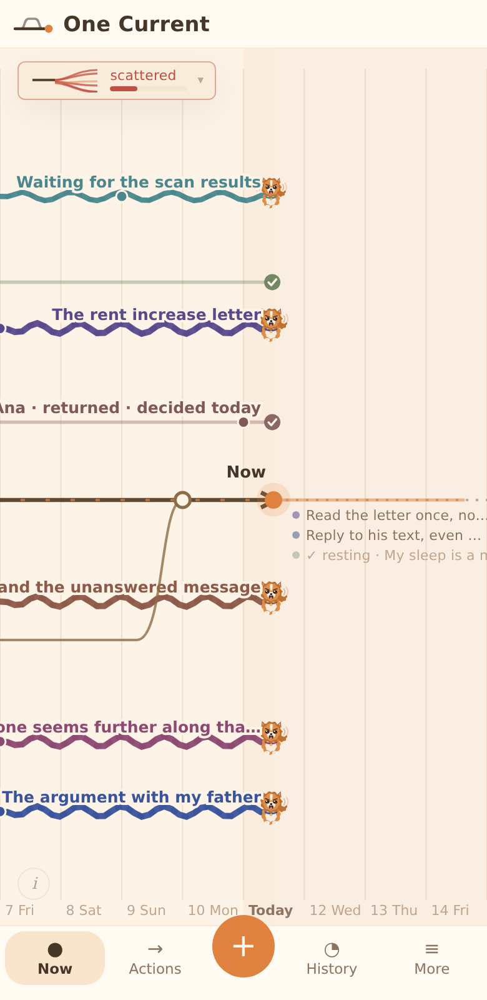
Oscuro de brasa. Cada hilo abierto es un dragoncito — enfréntalo con calma y se acomoda.
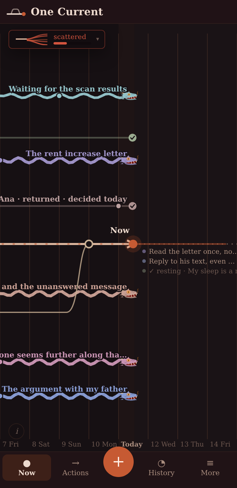
Agua quieta. Cada hilo abierto es un koi husmeando en Ahora — dale una decisión y el estanque se calma.
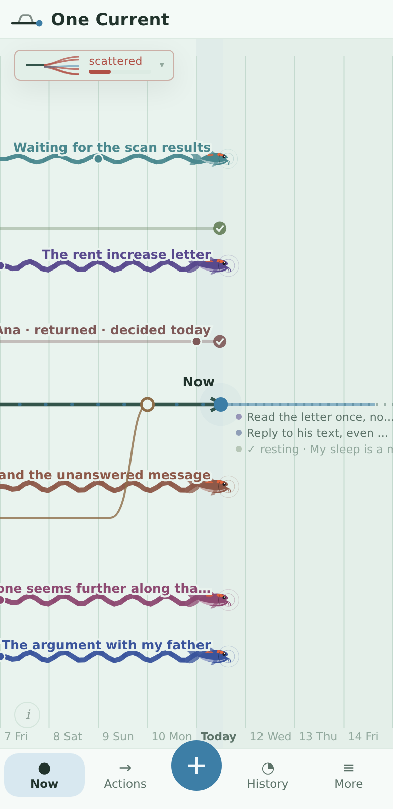
Crema y banderines. Cada hilo abierto es un globo — entre más espera, más se infla.
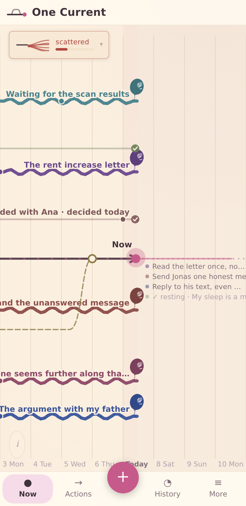
Lavanda y paticas suaves. Cada hilo abierto es un gato que te observa — respóndele y se hace bolita.
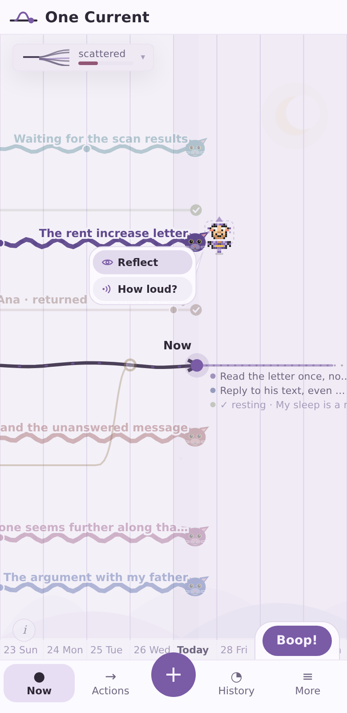
Negro de mar profundo. Cada hilo abierto es un pez abisal — entre más fuerte suena, más brilla su señuelo.
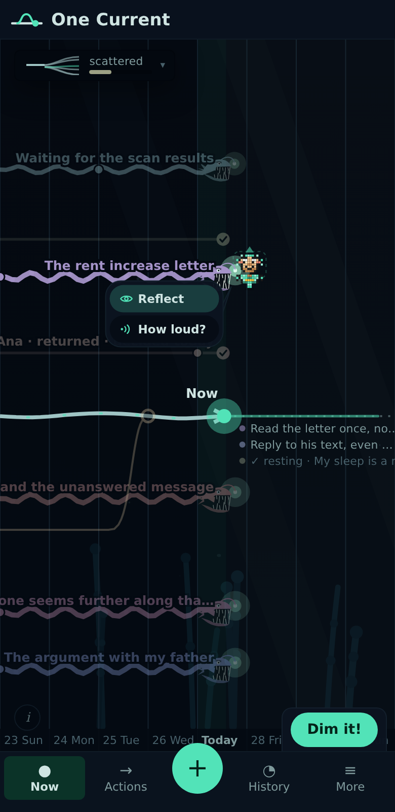
Niebla y luz de farol. Cada hilo abierto es un fantasmita — su lamento se abre más hasta que respondas.
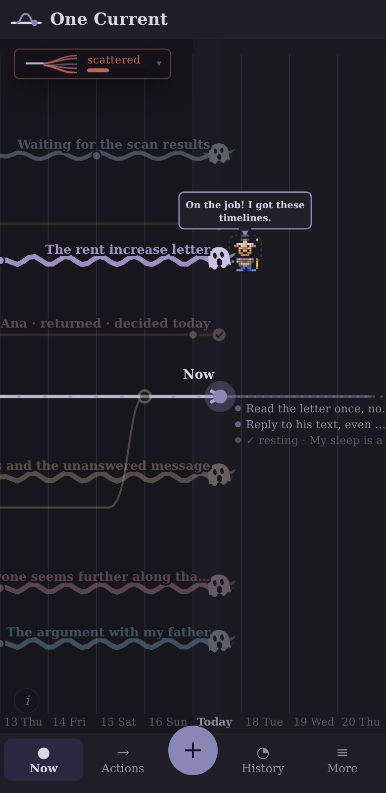
Privacidad
Lo que escribes en One Current se guarda localmente en tu dispositivo — no en nuestros servidores. Crear una cuenta te permite respaldar tu historial en la nube y compartir con tu psicólogo mediante códigos, pero esas funciones son opcionales. Tu respaldo se cifra antes de salir de tu dispositivo. No tenemos publicidad, ni analítica, y nunca vendemos tus datos.
Los códigos para compartir son de un solo uso y caducan en catorce días. Tu psicólogo ve únicamente los hilos que elegiste incluir. Puedes exportar todos tus datos como archivo, y borrar tu cuenta con todo lo que contiene cuando quieras, desde Ajustes.
One Current se instala directo desde Safari — sin necesidad de tienda de apps:
Se abre en pantalla completa con su propio ícono, y todo lo que escribes se queda en tu dispositivo.
One Current se instala directo desde tu navegador — sin necesidad de tienda de apps:
Se abre en su propia ventana con su propio ícono, y todo lo que escribes se queda en tu dispositivo.
Ya estás usando la app instalada — One Current está en tu pantalla de inicio.